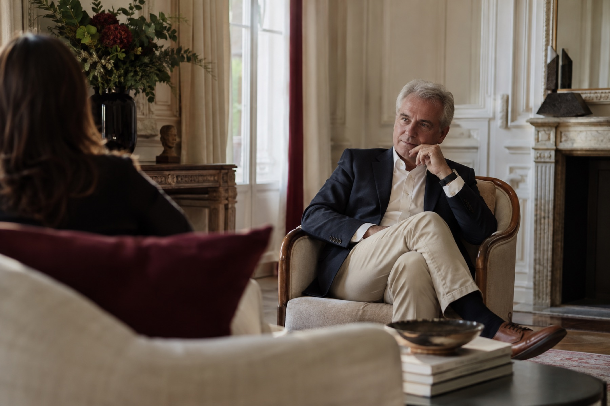

Führung & Veränderung
Führungsrollen klären, Verantwortung gestalten und Menschen in Veränderungsprozessen begleiten.
Wir betrachten Menschen, Zusammenarbeit und Strukturen gemeinsam. Daraus entwickeln wir einen Auftrag: von persönlicher Begleitung bis zum umfassenden Beratungsprojekt.
Projekt besprechenClaudia Effertz und Fachpartner arbeiten je nach Auftrag einzeln oder gemeinsam. Die fachliche Verantwortung wird zu Beginn geklärt.
Führungsrollen klären, Verantwortung gestalten und Menschen in Veränderungsprozessen begleiten.
Herausforderungen sortieren, Ressourcen stärken und tragfähige nächste Schritte entwickeln.
Unterschiedliche Perspektiven verbinden, Spannungen bearbeiten und Zusammenarbeit wieder ermöglichen.
Rollen, Prozesse und Zusammenarbeit so gestalten, dass Menschen wirksam arbeiten können.
Belastungen verstehen, Ressourcen stärken und passende Maßnahmen für den Arbeitsalltag entwickeln.
Vorhaben konkretisieren, Beteiligte zusammenbringen und die Umsetzung fachlich begleiten.
Menschen und Teams in anspruchsvollen Situationen stabilisieren und Handlungsfähigkeit stärken.
Spezialisierte Angebote aus dem Netzwerk ergänzen die Begleitung oder bilden ein eigenständiges Projekt.
Partner ansehenWir verbinden strategische Fragen des Betrieblichen Gesundheitsmanagements mit konkreten Maßnahmen. Analyseformate wie Workshops, Check-ups und Gespräche können ein sinnvoller Einstieg sein, wenn sie zum Auftrag passen.
Aktuelle Förderprogramme nennen wir erst nach gesonderter Prüfung.
Gespräch vereinbarenFührung, Coaching und Veränderung mit fachlicher Tiefe und einem klaren Blick für Menschen.
Claudia begleitet Führungskräfte, Teams und Organisationen. Schwerpunkte sind Selbstführung, Organisationsentwicklung, Rollenwechsel, Teambegleitung, strategische Projektentwicklung sowie Keynotes und Workshops. Ihre Leistungen sind direkt über GesundeUnternehmen anfragbar.
Claudia anfragen
Claudia Effertz · Originalporträt aus ihrem persönlichen Websiteprojekt.
Bei Bedarf verbinden wir unterschiedliche Fachperspektiven. Einzelne Partner können auch eigenständige Beratungsprojekte übernehmen.
Zum Netzwerk



Ein kurzes Gespräch schafft Klarheit über Auftrag, Fachkompetenzen und möglichen Einstieg.
Anliegen schildern